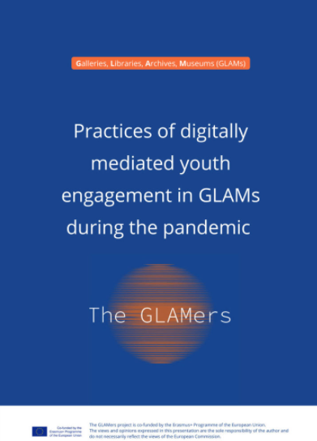
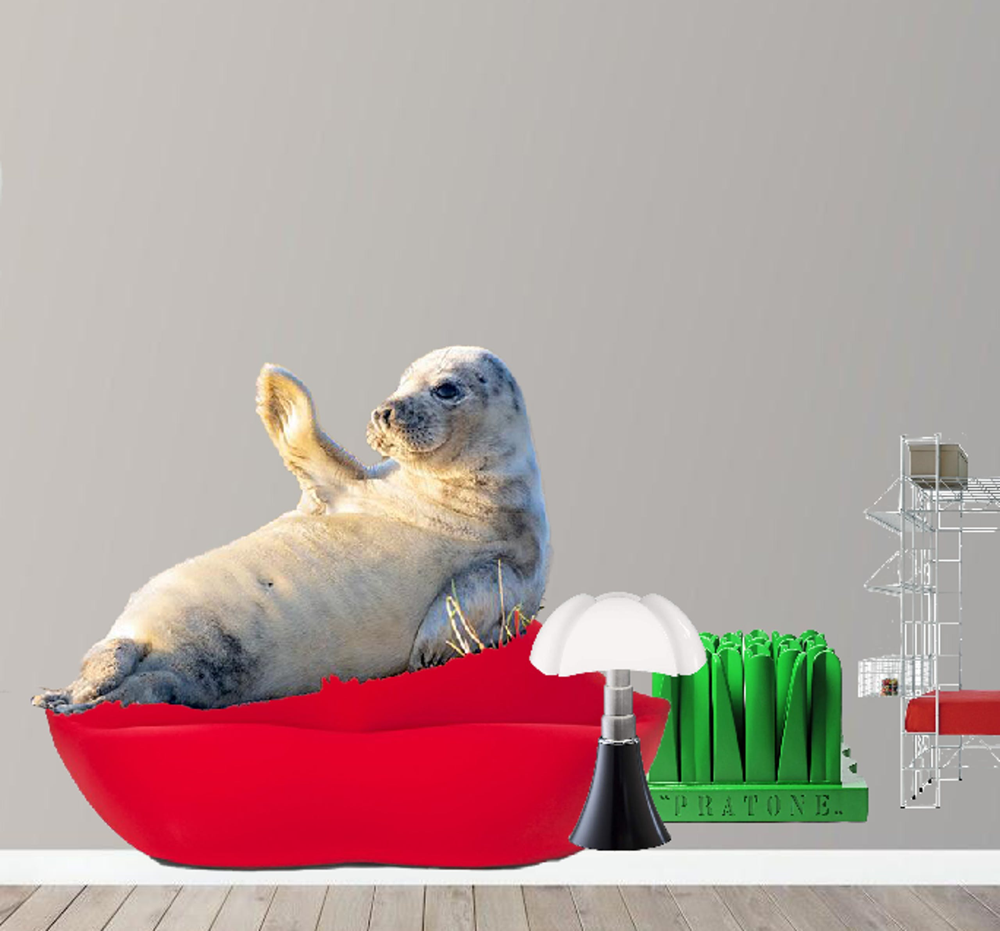

YOUTH ENGAGEMENT VIA SOCIAL MEDIA BY GLAMs DURING THE PANDEMIC
Actions per tool
Let’s have a look at youth engagement practices, organised by cultural institutions, that took place during the pandemic on Social Media platforms.
The examples presented in Unit 3 are the result of an activity of the EU funded project The GLAMers. This activity served to identify ways of digitally mediated youth engagement among European GLAMs during the pandemic. The output consisted of the collection and processing of 92 practices adopted by GLAMs throughout the pandemic period and concluded with the acknowledgment of the 15 most original initiatives. Part of the examples outlined in Unit 3 is derived from the Zourou K. & Pellegrini E. study released in 2021.

Image of Zourou K. & Pellegrini E. study (2021)
3.1. Instagram
See below two of the most creative practices that made exclusive use of Instagram to promote their projects motivating young people to get involved.
3.1.1. Instagram - Giacometti Foundation, Paris, France
The Foundation supported its audience to discover the work of Alberto Giacometti even in times of pandemics and mobility restrictions through digital engagement methods and tools. The Giacometti Foundation launched educational workshops on social networks where young visitors were invited to participate.
It was a series of 10 tutorials of creative activities, talking about art history and showing how to create artistic objects the way Giacometti did. Participants were then called to post their final creation resulting from the workshop on Instagram, mentioning the institution’s account @fondation_giacometti for recognition and reposting.
In this context, the Foundation also launched the hashtag #GiacomettiChezVous across all social media, maximizing thus the impact of its action.
3.1.2. Instagram - Photography Museum (FOAM), Amsterdam, The Netherlands
Below is the second of the most creative practices that made exclusive use of Instagram to promote their projects motivating young people to get involved: Instagram - Photography Museum (FOAM), Amsterdam, The Netherlands
The Museum’s initiative challenged its audience to reinterpret, in their own way, artworks of Dutch photographers from the museum’s collection or exhibitions.
3.2. Cultural initiatives organised through Youtube
YouTube is undoubtedly one of the most popular social media platforms and so, numerous digital actions organised by GLAMs took place by creating videos and uploading them on Youtube. Let’s see now two of these kinds of actions undertaken.
3.2.1. YouTube - By Anne Frank House, Amsterdam, The Netherlands
Anne Frank House has developed the Anne Frank video diary initiative through the release of 15 YouTube episodes based on Anne Frank's diary letters.
The Institution also created additional educational episodes explaining and elaborating on what can be seen in the video diaries. One of the activities proposed the creation of workbooks linked to the Anne Frank video diary and the extra educational episodes. The museum’s aim is to talk to young people about Anne Frank's life story and make them think of the theories that are developed in relation to her story.
Watch in this video Tom Brink - Head of publications and communications- speaking about this initiative in a webinar organised by The GLAMers project, (2021a), (time 14:20 - 21:50)
3.2.2. YouTube - By Museum of Literature Ireland (MoLI), Dublin, Ireland
Museum of Literature, Ireland, launched in collaboration with Sarah Webb, an award-winning children’s writer and children’s book champion,the Bright Sparks Creative Bursts initiative.
Children, but also adults, were called to follow Sarah’s video series talking about word games, fantastic stories and metaphors, and get inspired to keep their own diary or journal with their personal stories. Furthermore, one of the project goals was to enhance intergenerational creativity and connectivity!
Watch in this video Jenny Ryan - Head of learning and culture- talking about this initiative in a webinar organised by The GLAMers project, (2021a), (time 4:40- 13:53)
3.3. Combination of various social media
According to our research, many GLAMs started to use multiple social media channels during the pandemic aiming to engage a wider audience, especially the youngest part of it.
3.3.1. Youtube & hashtags for social networks - Singer Laren, Laren, The Netherlands
Singer Laren Museum developed activities for children to be involved with its collections while at home. The museum developed workshops where children got tips on how to recreate artworks and sculptures themselves.
Through questions and activities, children learned about diverse artists' backgrounds, observed their paintings and examined small details. Then, they were called to produce their own artwork and share it on social networks using the hashtags #singerlaren and #singeratelierbijjethuis.
3.3.2. YouTube, Instagram, Facebook, Twitter - Northern Ireland War Memorial Museum, (NIWM) Belfast, UK
On the occasion of #NationalDrawingDay, NIWM invited children to join the Museum on YouTube, where Catherine and Michael, the museum’s Learning Facilitator and Outreach Officer, showed participants different ways to create their own commemorative craft based on artwork inspired by the Northern Ireland War Memorial gallery.
This art and craft activity was created in partnership with the artist and ceramicist Diane McCormick. Also, the YouTube video guided participants on how to create their own commemorative artwork. Afterwards, participants were invited to send their work directly to the museum by post or email. Alternatively, they could share it with the museum on Facebook, Instagram and Twitter.
The Museum also launched its own hashtag campaign #NationalDrawingDay on social media.
3.3.3. Hashtags on all social media - National Museums Liverpool, Liverpool, United Kingdom
National Museums Liverpool (NML) asked children who were off school to create their own exhibition or gallery of artworks inspired by their own lives, such as their favourite toys, clothes, souvenirs or drawings.
In particular, the children had to think of 10 things and/or people that are important to them and then write a short explanation of each of their options. Subsequently, they were asked to give a name to their exhibition, design a poster and create a promotional video that was shared on social media using the hashtag #MyHomeIsMyMuseum. The winners also took part in a digital exhibition and met a curator who shared tips on setting up an exceptional exhibition.
Watch in this video Scott Smith - Head of the digital department- talking about this initiative in a webinar organised by The GLAMers project, (2021c), (time 32:37- 39:16)
3.3.4. TikTok, Instagram, Facebook & QR code - The Municipal Museum of Contemporary Art (S.M.A.K.), Ghent, Belgium
A very interesting project was organised during the pandemic by The Municipal Museum of Contemporary Art in Belgium that used multiple digital social networks to carry out its project.
The S.M.A.K. organised an imaginary museum and a 90-minutes open air activity for kids. The audience was invited to discover Citadel Park in Ghent, Belgium, and to dive into the Imaginary Museum activity, where children, closing their eyes, could listen as works of art came to life.
This action was also based on the use of the museum’s Heritage app that participants were called to download and then the QR code to open the map of the Park and see the route and the place where the imaginary artworks were located in the Park. Additionally, the museum invited the young public to take a selfie, a funny image and share it via TikTok, Instagram or Facebook using the hashtags #schattenvanvlieg #smakgent.
Watch in this video Peter Arts - Head of audience participation and communication- speaking about this initiative in a webinar organised by The GLAMers project, (2021a), (time 17:22 - 29:31)
3.3.5. Zoom - Triennale Milano, Milan, Italy
Triennale Milano organized online workshop visits for children scheduled every Sunday afternoon.

Triennale, Milan, Italy, Design-Me-Home,
Image via https://triennale.org/en/events/design-me-home-is-a-series-of-online-visits-workshops
The initiative offered its young participants the opportunity to discover the Museum of Italian Design directly from their own home. The cultural mediators of Triennale Milano interacted with young children through the Zoom platform and discussed objects hosted on the Google Arts&Culture platform.
Additional action was proposed by NEMO, the Network of European Museum Organisations. NEMO organised a webinar that guided the participants in the search for meaning during the pandemic, exploring the role and relevance of museums under these challenging times.
In this NEMO Webinar, Ece Özdil, founder of Jüniör, shared eight museum trends and related design methods to redefine how to deal with the digital audience and physical and digital (phygital) context that shape museums’ actions in the short-,mid- and long- term period (24:20 - 45:22 for the eight trends).
Find more info about the NEMO network, its practices and the impact of the Covid-19 on GLAMs in Europe following the links:
NEMO Webinar on the next museum trends. Ece Özdil, founder of Jüniör, deals with the role of museums during the pandemic crisis and tries to shape a diverse future for these cultural institutions.
Survey on the impact of the COVID-19 pandemic on museums in Europe The report comprises nearly 1,000 survey responses collected between 24 March and 30 April 2020 from museums in 48 countries, mainly from Europe. The survey findings focus on: economic support for museum operations; investment in digital cultural heritage; and making museums fit for crises.
Follow-up Survey on the impact of the COVID-19 pandemic on museums in Europe. This survey was answered by 600 museums from 48 countries between 30 October and 29 November 2020, the majority coming from Europe. The themes addressed are: Consequences of income (and other) losses; The increased importance of digital museum offers; Adapted operations and preparedness during and for crises.
Museums in 2020+. The search for meaning. This text reports eight trends that will guide museums in 2020 and beyond, to help museum-leaders, workers and enthusiasts, make mindful decisions, thinking about a new kind of audience and context where they can inform both their short-, mid- and long-term actions for their museum.
Finally, another way to collect GLAM initiatives designed to increase audience participation remotely is, among others, this map designed by Chiara Zuanni, University of Graz. The map brings together digital initiatives organised by museums during the pandemic.